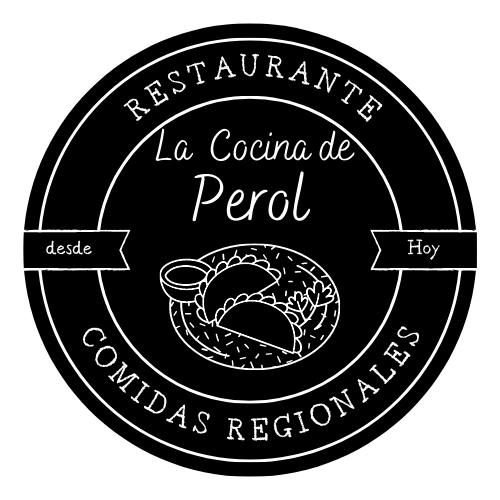

Aperitivos
Platillos
Bebidas y coctéles
Contáctanos
¡VEN Y DISFRUTA!
¡Ven a disfrutar de una increíble experiencia culinaria con nosotros!
Nuestro extenso menú cuenta con una amplia variedad de deliciosos platillos para todos los amantes de la buena cocina y uno de los mejores ambientes nocturnos en San Salvador.
¡No esperes más y vive la experiencia!